Профессия управляющего рестораном требует глубоких знаний в ресторанном менеджменте, финансовом планировании и управлении персоналом. Чтобы стать успешным руководителем заведения, важно пройти обучение по программам, которые охватывают все ключевые аспекты ресторанного сервиса — от разработки концепции ресторана до эффективного контроля работы команды. Сегодня многие курсы управляющего рестораном доступны в дистанционном формате, что позволяет совмещать обучение с работой и выбирать удобный график. Программы профессиональной переподготовки и дистанционные образовательные форматы включают теорию и практические занятия, направленные на развитие профессиональных навыков и освоение принципов операционного и финансового менеджмента. После успешного прохождения курсов выпускникам выдается диплом, подтверждающий квалификацию. Мы составили рейтинг программ, которые помогут освоить профессию управляющего рестораном и уверенно управлять ресторанным бизнесом.
Информация обновлена:
ТОП онлайн-курсов обучения по Ресторанному Бизнесу
- 🏆 MBA «Менеджмент в ресторанном бизнесе» — Московская Бизнес Академия (по промокоду onlinekursy скидка 🎁 10%)
- 🏆 Менеджмент в ресторанном бизнесе — Московская Бизнес Академия (по промокоду onlinekursy скидка 🎁 10%)
- 🏆 Менеджмент в ресторанном бизнесе — МИПО (по промокоду onlinekursy действует скидка 🎁 10%)
- Руководитель в ресторанном бизнесе — МИПО (по промокоду onlinekursy действует скидка 🎁 10%)
- Менеджмент в ресторанном бизнесе (Mini MBA) — MITM
- Менеджмент гостиничных и ресторанных предприятий — MITM
- Менеджер ресторанного бизнеса — Московская Бизнес Академия (по промокоду onlinekursy скидка 🎁 10%)
- Ресторанный бизнес в 2025 году: открытие, управление и маркетинг — Moscow Business School
- Стратегическое управление в ресторанной индустрии (MBA Professional) — Moscow Business School
- Маркетинг в ресторанном бизнесе PRO — Skillbox
- Ресторанный бизнес: управление предприятием питания — АНО ДПО «НАДПО» (по промокоду onlinekursy действует скидка 🎁 5%)
- Менеджмент ресторанного бизнеса — ИПО
- Управляющий рестораном (менеджмент в ресторанном бизнесе) — Учебный центр АПОК
- Управляющий рестораном (менеджмент в ресторанном бизнесе) — Учебный центр «ЭКОДПО»
- Ресторанный бизнес: управление предприятием питания — НЦРДО (по промокоду onlinekursy действует скидка 🎁 5%)
- Ресторанный бизнес: управление предприятием питания — Академия ЦАППКК (по промокоду onlinekursy действует скидка 🎁 5%)
- Управляющий рестораном — Учебный центр «НЦПО»
- Курсы управляющего рестораном — Международная школа профессии
Отличительные преимущества каждой дистанционной программы обучения на управляющего рестораном
| № | Название курса и школа | Отличительные преимущества | |
|---|---|---|---|
| 🥇 | MBA «Менеджмент в ресторанном бизнесе» — Московская Бизнес Академия | Полноценная MBA-программа с дипломом гос. образца и регистрацией в ФРДО; 70% практики и кейсов; дистанционный формат 18 мес.; карьерное сопровождение и рассрочка без переплат. | Перейти |
| 🥈 | Менеджмент в ресторанном бизнесе — Московская Бизнес Академия | 9-месячный курс с международным дипломом; гибкий онлайн-график; практические занятия и кейсы; преподаватели — известные эксперты и бизнес-тренеры. | Перейти |
| 🥉 | Менеджмент в ресторанном бизнесе — МИПО | Полноценная MBA-программа с дипломом международного образца; 1,5 года обучения; персональный куратор; углублённое изучение стратегического менеджмента и финансов. | Перейти |
| 4 | Руководитель в ресторанном бизнесе — МИПО | Диплом о переподготовке гос. образца; 8-месячное обучение с 18 модулями; рассрочка без переплат; преподаватели-практики из топ-компаний. | Перейти |
| 5 | Менеджмент в ресторанном бизнесе (Mini MBA) — MITM | Mini MBA за 9 месяцев; диплом MBA гос. образца; онлайн-формат; обучение с практикующими управленцами ресторанной индустрии. | Перейти |
| 6 | Менеджмент гостиничных и ресторанных предприятий — MITM | Бакалавриат 3,5–4,5 года; диплом высшего образования; без ЕГЭ; дистанционный формат; управление гостиничным и ресторанным бизнесом. | Перейти |
| 7 | Менеджер ресторанного бизнеса — Московская Бизнес Академия | Курс переподготовки за 5 месяцев; диплом ФРДО; модуль по искусственному интеллекту; аккредитации ECICEL и НАСДОБР; карьерное сопровождение. | Перейти |
| 8 | Ресторанный бизнес в 2025 году: открытие, управление и маркетинг — Moscow Business School | Интенсив 5 дней (очно или онлайн); практические кейсы; эксперты из Tanuki и Cofix; удостоверение о повышении квалификации MBS. | Перейти |
| 9 | Стратегическое управление в ресторанной индустрии (MBA Professional) — Moscow Business School | Программа MBA Professional; диплом международного уровня с Diploma Supplement; 14 месяцев; доступ к бизнес-клубу выпускников. | Перейти |
| 10 | Маркетинг в ресторанном бизнесе PRO — Skillbox | 6-месячный курс с 190 уроками; программа «Поможем найти работу или вернем деньги»; преподаватели — директора по маркетингу ведущих ресторанов. | Перейти |
| 11 | Ресторанный бизнес: управление предприятием питания — АНО ДПО «НАДПО» | 4-месячный курс с дипломом ФРДО; бесплатный доступ к библиотекам ЛитРес; гибкий график; 30% практических занятий; цена от 28 350 ₽. | Перейти |
| 12 | Менеджмент ресторанного бизнеса — ИПО | Дистанционный курс 6 мес.; диплом ФРДО; преподаватели — кандидаты наук; поддержка Центра карьеры и гибкая рассрочка. | Перейти |
| 13 | Управляющий рестораном (менеджмент в ресторанном бизнесе) — АПОК | Программа переподготовки от 1 мес.; диплом ФИС ФРДО; бесплатная доставка документов; гибкий онлайн-график и поддержка кураторов. | Перейти |
| 14 | Управляющий рестораном (менеджмент в ресторанном бизнесе) — ЭКОДПО | Дистанционное обучение без вступительных экзаменов; диплом ФРДО; бесплатная доставка; 0% рассрочка; круглосуточный доступ 24/7. | Перейти |
| 15 | Ресторанный бизнес: управление предприятием питания — НЦРДО | Диплом ФРДО; 4 месяца обучения; HR-консультации и карьерное сопровождение; высокая оценка выпускников на Яндекс и Google. | Перейти |
| 16 | Ресторанный бизнес: управление предприятием питания — ЦАППКК | Курс 4 месяца; бессрочный доступ к материалам; диплом ФРДО; HR-наставник и поддержка после обучения; удобная рассрочка 0%. | Перейти |
| 17 | Управляющий рестораном — НЦПО | Гибкий курс 250–1600 часов; диплом гос. образца с ФРДО; рейтинг 5.0 на Яндекс; бесплатная доставка документов по РФ. | Перейти |
| 18 | Курсы управляющего рестораном — Международная школа профессии | Диплом о переподготовке; дистанционное обучение; преподаватели — практикующие управляющие; курс подходит для начинающих и предпринимателей. | Перейти |
1. 🏆 MBA «Менеджмент в ресторанном бизнесе» — Московская Бизнес Академия
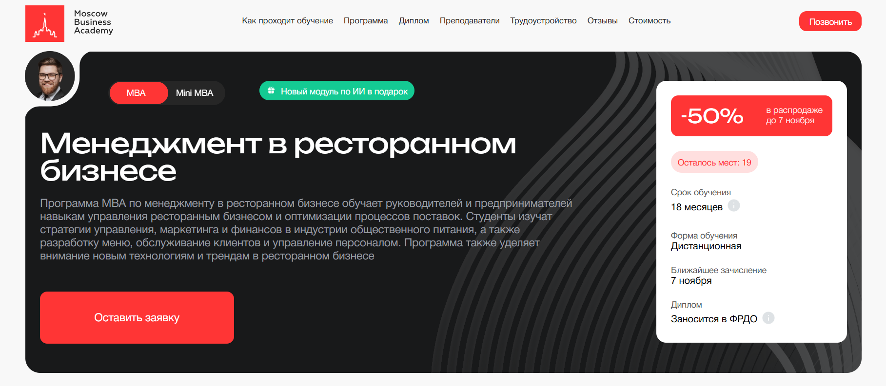- ✅ Официальный сайт: moscow.mba
- 💸 Цена обучения: 355 000 ₽ (со скидкой 50%).
- 💳 Рассрочка: от 9 861 ₽/мес до 36 месяцев без переплаты, первый платеж через месяц.
- 📚 Формат: дистанционный формат обучения: видеолекции, практические задания, тесты, проекты и обратная связь от преподавателей.
- ⏳ Продолжительность: 18 месяцев.
- 📜 Документ: по окончании обучения выдается диплом государственного образца, заносится в ФРДО.
- 📝 Трудоустройство: помощь в составлении резюме, карьерные консультации и сопровождение при трудоустройстве.
- 🔷 Для кого подходит курс: для владельцев ресторанов, управляющих заведениями общественного питания, администраторов кафе, специалистов гостинично-ресторанного сектора и тех, кто хочет открыть собственный ресторанный бизнес.
Особенности:
Программа MBA по ресторанному менеджменту в Московской Бизнес Академии проходит в дистанционном формате, что удобно для совмещения с работой. Обучение охватывает все ключевые аспекты ресторанного сервиса: управление персоналом, финансовое планирование, маркетинг и организацию обслуживания. Студенты получают профессиональные навыки, необходимые управляющему рестораном для эффективного ведения бизнеса. Курсы включают работу с реальными кейсами, проектами и анализом форматов заведений. Выпускники курсов отмечают, что обучение проводится с применением современных дистанционных технологий, что делает процесс обучения гибким и доступным. Программа подходит тем, кто хочет повысить квалификацию и развить управленческие компетенции в сфере общественного питания.
Чему учатся студенты:
- Управлять персоналом и повышать стандарты ресторанного сервиса
- Планировать финансовые и маркетинговые стратегии предприятия питания
- Разрабатывать концепцию ресторана и эффективное меню
- Организовывать бизнес-процессы и контролировать качество обслуживания
- Использовать digital-маркетинг и технологии продвижения food-проектов
- Анализировать конкурентные стратегии ресторанного рынка
- Оценивать стоимость бизнеса и управлять проектным финансированием
Преподаватели:
- Дмитрий Губарев — предприниматель и бизнес-консультант, эксперт в финансах и развитии бизнеса, аспирант РЭУ им. Плеханова.
- Мария Егиазарова — выпускница МГУ, бизнес-психолог, спикер и консультант в области лидерства и мотивации персонала.
- Евгений Литвинов — кандидат экономических наук, специалист по аналитике и стратегическому менеджменту.
Преимущества:
- Современная дистанционная форма обучения с доступом к платформе 24/7
- Программа актуализирована в 2025 году и соответствует профессиональным стандартам
- 70% учебного процесса составляют практические занятия и кейсы
- Международный диплом установленного образца, заносится в реестр ФРДО
- Опытные преподаватели и карьерное сопровождение после окончания обучения
- Возможность обучения в рассрочку и получения налогового вычета 13%
- Доступ к онлайн-ресурсам и материалам из любой точки мира
Отзывы учеников:
Студенты Московской Бизнес Академии отмечают удобный формат дистанционного обучения, поддержку преподавателей и кураторов, а также практическую направленность программы. Многие выпускники подчеркивают, что полученные знания помогли им развить свои заведения и повысить прибыльность ресторанного бизнеса. Отдельно выделяют качественные материалы и гибкий график обучения, позволяющий совмещать учебу с работой.
Перейти на официальный сайт курса2. 🏆 Менеджмент в ресторанном бизнесе — Московская Бизнес Академия
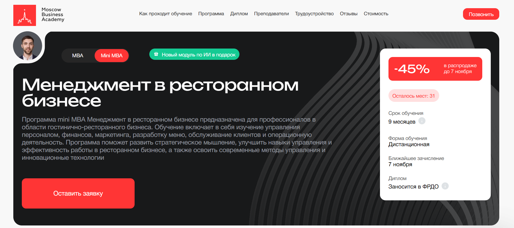- ✅ Официальный сайт: moscow.mba
- 💸 Цена обучения: 286 000 ₽ ( действует скидка 45%).
- 💳 Рассрочка: 11 916 ₽ в месяц до 24 месяцев без переплаты, первый платеж через месяц.
- 📚 Формат: дистанционный формат с видеолекциями, практическими заданиями, онлайн-вебинарами и тестами. Доступен онлайн в любое время.
- ⏳ Продолжительность: 9 месяцев.
- 📜 Документ: по окончании обучения выдается международный диплом установленного образца, заносится в ФРДО.
- 📝 Трудоустройство: помощь в оформлении резюме, подготовке к собеседованиям и построении карьеры. Выпускники получают поддержку при трудоустройстве.
- 🔷 Для кого подходит курс: для управляющих рестораном, администраторов кафе и баров, рестораторов и владельцев бизнеса, желающих развить профессиональные навыки в сфере ресторанного менеджмента.
Особенности:
Программа проходит в дистанционном формате, что позволяет совмещать обучение с работой. Учебный процесс построен на современных образовательных платформах с применением дистанционных технологий и интерактивных сервисов. Обучение охватывает все ключевые аспекты ресторанного менеджмента — от управления персоналом и финансов до разработки концепции ресторана и продвижения food-проекта. Студенты изучают реальные кейсы и получают практические навыки на примере предприятий общественного питания. По завершении курса слушатели получают диплом государственного образца, подтверждающий квалификацию управляющего рестораном. Поддержка кураторов и преподавателей помогает успешно пройти программу и применить знания в реальной работе.
Чему учатся студенты:
- Управлять персоналом и повышать стандарты ресторанного сервиса
- Разрабатывать меню и контролировать операционные процессы
- Планировать бюджет и заниматься финансовым менеджментом ресторана
- Формировать маркетинговые стратегии и внедрять digital-продвижение
- Оценивать стоимость бизнеса и управлять развитием сети заведений
- Создавать концепцию ресторана и управлять качеством обслуживания
Преподаватели:
- Ицхак Пинтосевич — эксперт по личностному росту и бизнес-развитию, автор 15 книг-тренингов, в том числе «Действуй! 10 заповедей успеха».
- Елена Чигаева — сертифицированный маркетолог и таргетолог, автор проектов по психологии маркетинга и брендингу.
- Ирина Германова — руководитель Института дополнительного профессионального образования работников социальной сферы, кандидат наук.
Преимущества:
- Дистанционное обучение с гибким графиком и поддержкой кураторов
- Доступ к учебным материалам и вебинарам из любой точки мира
- 70% программы составляют практические задания и кейсы
- Международный диплом, заносимый в федеральный реестр ФРДО
- Преподаватели — практикующие специалисты ресторанной индустрии
- Карьерная поддержка и консультации по трудоустройству
- Возможность компенсировать до 100% стоимости обучения с программой привилегий
Отзывы учеников:
Выпускники Московской Бизнес Академии отмечают высокое качество преподавания и современный подход к дистанционному обучению. Студенты подчеркивают удобный формат, возможность совмещать учебу с работой и реальную пользу полученных знаний. Среди плюсов часто выделяют поддержку преподавателей, практическую направленность занятий и актуальность программы для тех, кто управляет ресторанами или планирует открыть собственный бизнес.
Перейти на официальный сайт курса3. 🏆 Менеджмент в ресторанном бизнесе — Московский институт профессионального образования (МИПО)
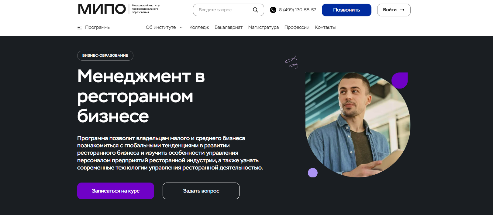- ✅ Официальный сайт: mipo.msk.ru
- 💸 Цена обучения: уточнять на сайте (действует скидка 30%).
- 💳 Рассрочка: доступна на весь срок обучения.
- 📚 Формат: дистанционное обучение, вебинары, тестирование, лекции, практические задания, персональный куратор, доступ к образовательной платформе.
- ⏳ Продолжительность: 1 год 6 месяцев (2700 часов).
- 📜 Документ: диплом MBA установленного образца с внесением данных в ФИС-ФРДО и международным приложением Diploma Supplement.
- 📝 Трудоустройство: выпускники получают востребованную квалификацию и повышают доходность своих предприятий.
- 🔷 Для кого подходит курс: владельцам малого и среднего бизнеса, менеджерам проектов, управляющим рестораном и руководителям ресторанных заведений.
Особенности:
Программа построена в дистанционном формате, что позволяет совмещать обучение с работой. Курс охватывает все ключевые аспекты управления ресторанным бизнесом: от стратегического менеджмента до финансового планирования. Обучение проходит с применением современных дистанционных технологий, включая вебинары, тесты и анализ реальных кейсов. Каждый слушатель получает поддержку персонального куратора, который сопровождает до получения диплома. Программа соответствует профессиональным стандартам, а диплом MBA котируется в России и за рубежом. Обучение направлено на развитие практических навыков руководителей и владельцев ресторанов, повышение уровня сервиса и эффективности управления заведениями общественного питания.
Чему учатся студенты:
- Изучают современные технологии управления ресторанной деятельностью;
- Осваивают бюджетирование и управленческий учет;
- Изучают принципы стратегического и операционного менеджмента;
- Учится формировать маркетинговые стратегии и использовать digital-инструменты продвижения;
- Изучают основы управления персоналом предприятий питания;
- Развивают навыки планирования, анализа и оптимизации бизнес-процессов.
Преподаватели:
- Дмитрий Коноплянский — основатель сети ювелирных салонов, советник «НЛМК», «НК РОСНЕФТЬ»;
- Сергей Ряковский — эксперт по стратегическому менеджменту, автор пособий по управлению персоналом;
- Траншье Янник — эксперт по инновационному менеджменту, технологический брокер;
- Татьяна Баранова — эксперт по деловому этикету и протоколу, основатель проекта «Про ЭТИКЕТ»;
- Борисов Александр — эксперт по бизнес-планированию, инвестиционному анализу;
- Додерер Александр — глава агентства стратегических коммуникаций GRUPPE DREI.
Преимущества:
- Дистанционное обучение без отрыва от работы;
- Лицензированная программа MBA с внесением данных в Федеральный реестр ФИС-ФРДО;
- Персональный куратор и поддержка преподавателей на всех этапах обучения;
- Обучение по современным образовательным стандартам и методикам ведущих бизнес-школ;
- Реальные кейсы и практические задания от экспертов индустрии гостеприимства;
- Официальный диплом международного образца, признанный работодателями;
- Возможность оформить налоговый вычет и вернуть 13% стоимости обучения.
Отзывы учеников:
Выпускники отмечают удобный дистанционный формат, поддержку кураторов и актуальные знания, применимые в реальной работе. Многие подчеркивают, что обучение помогло повысить финансовые показатели бизнеса и выйти на новый профессиональный уровень. Студенты отмечают практическую направленность занятий и высокий уровень преподавателей.
Перейти на официальный сайт курса4. Руководитель в ресторанном бизнесе — Московский институт профессионального образования
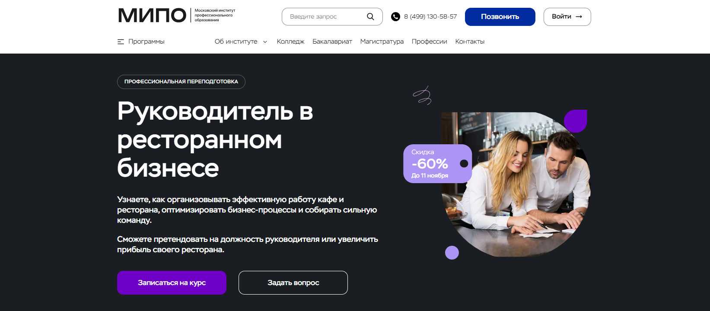- ✅ Официальный сайт: mipo.msk.ru
- 💸 Цена обучения: 55 000 ₽ (со скидкой 60%).
- 💳 Рассрочка: беспроцентная рассрочка до 24 месяцев — от 2 292 ₽ в месяц.
- 📚 Формат: дистанционный формат, онлайн-вебинары, тестирование, практические задания, поддержка куратора и доступ к видеоурокам.
- ⏳ Продолжительность: 8 месяцев, 654 академических часа.
- 📜 Документ: диплом о профессиональной переподготовке с внесением данных в Федеральный реестр ФИС-ФРДО.
- 📝 Трудоустройство: выпускники получают возможность занять должность управляющего рестораном, операционного директора или владельца кафе.
- 🔷 Для кого подходит курс: для управляющих рестораном, администраторов, владельцев бизнеса и всех, кто хочет развиваться в ресторанном менеджменте.
Особенности:
Обучение проходит в дистанционном формате, что позволяет совмещать учебу с работой и личными проектами. Программа включает 18 тематических модулей, охватывающих управление ресторанным бизнесом, подбор персонала, финансовый менеджмент и основы ресторанного сервиса. Курсы подходят тем, кто хочет освоить профессию управляющего рестораном и развить профессиональные навыки для успешного управления заведениями общепита. Обучение проводится с использованием дистанционных технологий на образовательной платформе института. По окончании обучения выдается диплом установленного образца, котируемый в России и за рубежом. Программа обновляется с учетом современных требований ресторанной индустрии и стандартов сервиса.
Чему учатся студенты:
- Организовывать эффективную работу кафе, ресторанов и баров
- Проводить аудит предприятия и оптимизировать бизнес-процессы
- Разрабатывать концепцию ресторана и стандарты обслуживания
- Управлять персоналом и повышать мотивацию сотрудников
- Планировать бюджет и вести финансовый учет
- Применять юридические аспекты в управлении заведениями общественного питания
- Создавать атмосферу и улучшать качество ресторанного сервиса
Преподаватели:
- Карпухин Александр — руководитель проектов создания экспертных и аналитических систем для бизнеса и государства, эксперт РБК и РАН.
- Шам Ангелина — кандидат наук, бизнес-психолог, спикер Global Speakers Federation, автор книги «Ангел влияния».
- Зеленская Татьяна — бизнес-консультант с опытом более 15 лет, эксперт в управлении командами топ-уровня.
- Васильева Елена — генеральный директор и основатель аудиторской компании «Форос Аудит», эксперт в бухгалтерском учете и менеджменте.
- Скрипачева Елена — спикер и тренер в продажах, автор методических пособий, работала с компаниями «Сбербанк», «Росатом», «Эльдорадо».
- Лебедев Александр — бизнес-трекер, консультант в сфере телеком и IT, ментор по развитию компаний и стратегическому росту.
Преимущества:
- Дистанционный формат обучения, доступный из любой точки мира
- Официальный диплом о переподготовке с внесением в Федеральный реестр
- Практические кейсы и реальные примеры из ресторанной индустрии
- Поддержка куратора и преподавателей на каждом этапе обучения
- Совмещение обучения с работой благодаря гибкому графику
- Возможность карьерного роста до управляющего рестораном или владельца бизнеса
- Преподаватели — действующие эксперты ресторанного менеджмента
- Актуальные знания по стандартам управления ресторанным бизнесом
Отзывы учеников:
Выпускники курсов отмечают удобный дистанционный формат и доступный график обучения. Многие подчеркивают, что после прохождения программы им удалось повысить прибыль своих заведений и перейти на руководящие должности. Студенты довольны качеством преподавания, поддержкой кураторов и возможностью применять полученные знания на практике. 94% слушателей отметили рост финансовых результатов, а 96% остались довольны процессом обучения.
Перейти на официальный сайт курса5. Менеджмент в ресторанном бизнесе (Mini MBA) — Московский институт технологий и управления
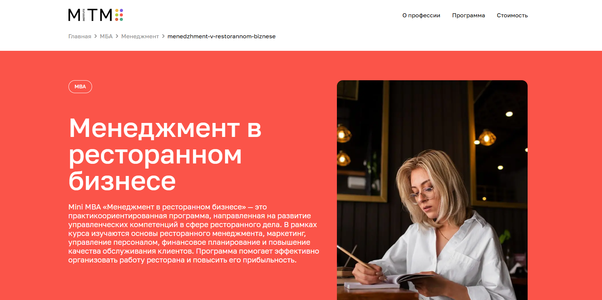- ✅ Официальный сайт: mitm.institute
- 💸 Стоимость обучения: от 286 080 ₽.
- 💳 Рассрочка: беспроцентная рассрочка на 24 месяца, от 11 920 ₽ в месяц образовательный кредит от Сбера, рассрочка от «Тинькофф Банка».
- 📚 Формат: дистанционный формат обучения — видеолекции, практические занятия, тесты, доступ к онлайн-библиотеке, консультации с кураторами.
- ⏳ Продолжительность: 9 месяцев (1260 часов, 18 практических занятий).
- 📜 Документ: по окончании обучения выдается диплом государственного образца MBA.
- 📝 Трудоустройство: программа трудоустройства выпускников курсов и поддержка куратора 24/7.
- 🔷 Для кого подходит курс: менеджерам ресторанов, владельцам бизнеса, специалистам ресторанного сервиса и тем, кто хочет освоить профессию управляющего рестораном.
Особенности:
Программа разработана для профессионалов, стремящихся управлять ресторанным бизнесом с применением современных инструментов и стратегий. Обучение проходит в дистанционном формате, что позволяет совмещать обучение с работой и личными проектами. Курсы ресторанного менеджмента направлены на развитие управленческих и финансовых компетенций, изучение аспектов ресторанной индустрии и стандартов сервиса. В процессе обучения студенты изучают ресторанную сферу, осваивают практические навыки управления персоналом, разработки концепции ресторана и контроля расходов. Формат обучения адаптирован под требования работодателей, а система дистанционного образования позволяет получать знания онлайн с любого устройства. По завершении курса выпускники получают профессиональную подготовку, необходимую для успешного прохождения обучения и дальнейшего трудоустройства в заведениях общественного питания.
Чему учатся студенты:
- Основам ресторанного менеджмента и операционного управления
- Подбору и мотивации персонала ресторана
- Финансовому менеджменту и планированию расходов
- Созданию концепции ресторана и составлению меню
- Развитию ресторанного сервиса и повышению уровня обслуживания
- Эффективному управлению заведениями общепита
- Использованию маркетинговых инструментов для продвижения бизнеса
Преподаватели:
- Курс ведут практикующие управленцы и эксперты ресторанной индустрии, имеющие опыт работы директорами ресторанов и консультантами предприятий питания.
Преимущества:
- Дистанционное обучение доступно онлайн из любой точки мира
- Удобный формат обучения и гибкий график
- Возможность совмещать обучение с работой
- Диплом государственного образца после успешного прохождения курса
- Поддержка кураторов и преподавателей на всех этапах обучения
- Программа соответствует профессиональным стандартам индустрии гостеприимства
- Выпускники получают новые профессиональные навыки и карьерные возможности
- Возможность вернуть 13% от стоимости обучения через налоговый вычет
Отзывы учеников:
Выпускники курсов отмечают, что дистанционный формат удобен для совмещения с работой. Многие слушатели подчеркивают практическую направленность обучения, понятную структуру материалов и возможность применить знания сразу после прохождения курсов. Отмечается рост профессиональных навыков, повышение уверенности в управлении рестораном и развитие собственного бизнеса.
Перейти на официальный сайт курса6. Менеджмент гостиничных и ресторанных предприятий — Московский институт технологий и управления
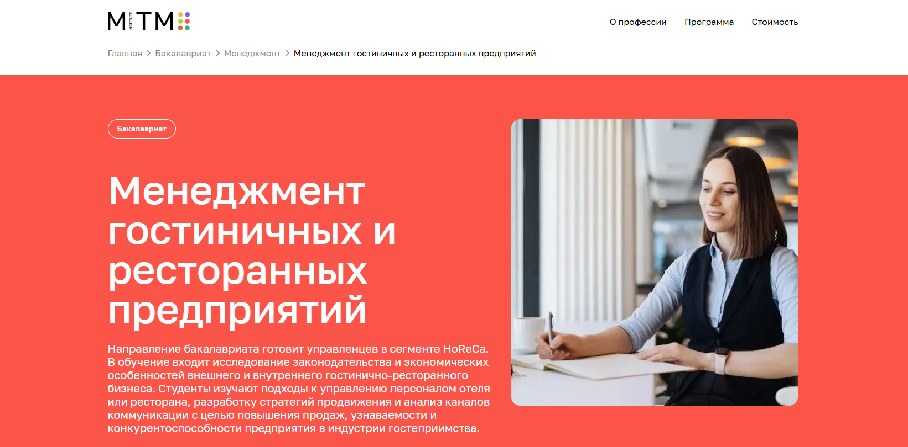
- ✅ Официальный сайт: mitm.institute
- 💸 Стоимость обучения: от 54 000 ₽, возможен возврат 13% от стоимости.
- 💳 Рассрочка: предоставляется на весь период обучения без переплат от 4 500 ₽ в месяц.
- 📚 Формат: дистанционное обучение, видеолекции, тесты, практические задания и доступ к записям всех занятий в личном кабинете.
- ⏳ Продолжительность: 4 года 6 месяцев, сокращённая форма — 3,5 года.
- 📜 Документ: по окончании обучения выдается диплом бакалавра государственного образца.
- 📝 Трудоустройство: выпускники получают квалификацию управляющего рестораном или гостиницей и могут работать в сфере ресторанного сервиса и гостеприимства.
- 🔷 Для кого подходит курс: для выпускников 11 класса, специалистов со средним профессиональным и высшим образованием, желающих получить второе высшее без ЕГЭ.
Особенности:
Программа ориентирована на развитие профессиональных навыков в управлении ресторанным бизнесом и гостиничным сервисом. Дистанционный формат обучения позволяет совмещать учебу с работой и получать знания в удобное время. Образовательная программа охватывает финансовый менеджмент, разработку концепции ресторана, подбор и мотивацию персонала, маркетинг и продвижение услуг в индустрии гостеприимства. Курсы управляющего рестораном включают практические кейсы, реальные примеры из сферы ресторанного сервиса и работу с современными цифровыми инструментами. После успешного прохождения обучения выпускники могут стать управляющими ресторанов, владельцами заведений или директорами предприятий общественного питания. Обучение проводится с использованием дистанционных технологий и современных образовательных платформ.
Чему учатся студенты:
- Управлять персоналом и строить эффективную систему обслуживания
- Изучать основы финансового менеджмента и операционного планирования
- Осваивать HR-навыки и стандарты ресторанного сервиса
- Понимать аспекты ресторанной индустрии и специфику HoReCa
- Разрабатывать маркетинговые стратегии и каналы продвижения
- Проводить анализ эффективности заведения и управлять прибылью
Преподаватели:
- Преподаватели института — эксперты ресторанного бизнеса, специалисты в области управления предприятиями общественного питания и гостиничного дела, кандидаты экономических наук, практикующие рестораторы и директора отелей.
Преимущества:
- Дистанционный формат обучения доступен онлайн из любой точки мира
- Удобный график обучения и гибкая система сдачи экзаменов
- Выдается диплом государственного образца
- Программа соответствует профессиональным стандартам ресторанного менеджмента
- Можно перевестись из другого вуза с перезачетом дисциплин
- Возможность совмещать обучение с профессиональной деятельностью
- После завершения курса выпускники получают востребованные компетенции в сфере управления рестораном
Отзывы учеников:
По отзывам студентов, обучение помогает освоить управление ресторанным бизнесом с нуля и получить практические навыки для работы управляющим рестораном. Отмечают удобный дистанционный формат, профессиональных преподавателей и возможность совмещать учебу с работой. Многие выпускники после окончания курсов открыли собственные заведения или получили должности администраторов и директоров ресторанов.
Перейти на официальный сайт курса7. Менеджер ресторанного бизнеса — Московская Бизнес Академия
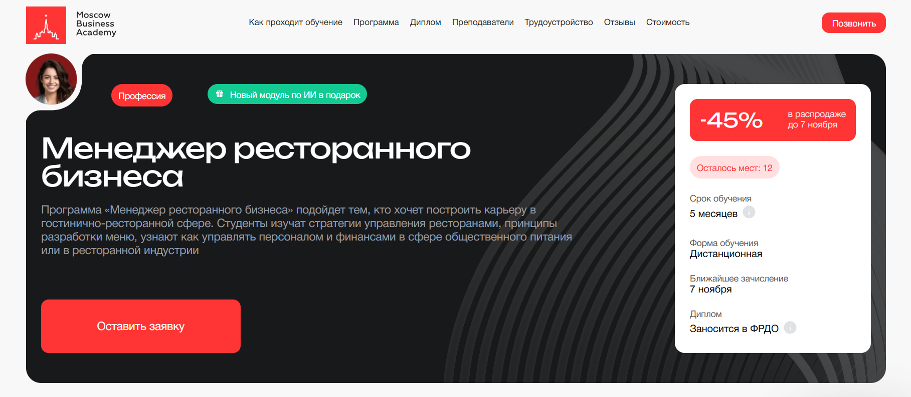- ✅ Официальный сайт: moscow.mba
- 💸 Цена обучения: от 163 900 ₽ в месяц (со скидкой 45%).
- 💳 Рассрочка: от 6 829 ₽ в месяц до 24 месяцев, без переплаты, первый платеж через месяц.
- 📚 Формат: дистанционный формат — видеолекции, практические задания, тесты, обратная связь от преподавателей и кураторов.
- ⏳ Продолжительность: 5 месяцев.
- 📜 Документ: диплом о профессиональной переподготовке, заносится в ФРДО.
- 📝 Трудоустройство: помощь в создании резюме, портфолио, подборе вакансий и подготовке к собеседованию.
- 🔷 Для кого подходит курс: будущим предпринимателям, управляющим рестораном, администраторам и тем, кто хочет начать карьеру в ресторанной индустрии.
Особенности:
Программа создана для тех, кто стремится освоить ресторанный менеджмент и управление персоналом в дистанционном формате обучения. Образовательный процесс построен на реальных кейсах и практических занятиях. Студенты изучают аспекты ресторанного сервиса, финансовый менеджмент, разработку меню и операционный менеджмент. Обучение проходит на онлайн-платформе, что позволяет совмещать учебу с работой и личными делами. После окончания выдается официальный диплом о профессиональной переподготовке, действительный в России и за рубежом. Академия аккредитована ECICEL, РАБО, НАСДОБР и ELQN, что подтверждает высокое качество образовательных услуг. Курс подходит как для новичков, так и для тех, кто уже управляет ресторанами или планирует открыть собственный бизнес.
Чему учатся студенты:
- Управлять персоналом и процессами в заведениях общественного питания
- Разрабатывать концепцию ресторана и контролировать качество сервиса
- Проводить фудбрендинг и фудкост-анализ
- Планировать бюджет и заниматься финансовым менеджментом
- Использовать IT-инструменты и PEST-анализ в ресторанной сфере
- Организовывать эффективное взаимодействие между отделами
Преподаватели:
- Валентина Катаниди — бизнес-тренер, карьерный консультант, более 3500 часов тренингов по soft skills, полуфиналист «Лиги лекторов».
- Шарипова Гульназ — основатель GeCo UAE, эксперт по управлению доставкой в ресторанах Ближнего Востока (Дубай, Катар, ОАЭ).
- Ангелина Шам — корпоративный бизнес-психолог, кандидат наук, автор книг по психологии и коммуникации, спикер и коуч.
Преимущества:
- Дистанционное обучение с гибким графиком
- Практические задания и реальные бизнес-кейсы
- Бонусный модуль по искусственному интеллекту в управлении проектами
- Карьерная поддержка и помощь в трудоустройстве после окончания курса
- Доступ к лекциям и материалам из любой точки мира
- Программа обновлена в 2025 году с учетом современных стандартов ресторанного бизнеса
- Возможность компенсировать до 100% стоимости с программой привилегий
Отзывы учеников:
Студенты Московской Бизнес Академии отмечают высокий уровень преподавателей и актуальность программы. По отзывам выпускников, курс помогает развить управленческие и профессиональные навыки, получить практический опыт и уверенно начать карьеру управляющего рестораном. Многие ученики подчеркивают, что дистанционное обучение удобно совмещать с работой, а диплом помогает при трудоустройстве в ведущие компании ресторанной сферы.
Перейти на официальный сайт курса8. Ресторанный бизнес в 2025 году: открытие, управление и маркетинг — Moscow Business School
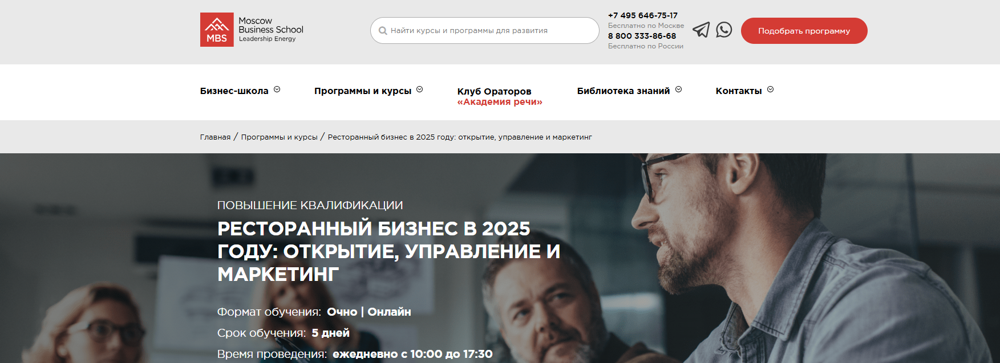- ✅ Официальный сайт: mbschool.ru
- 💸 Цена обучения: 71 900 ₽ (со скидкой 10% при оплате онлайн — 64 710 ₽).
- 💳 Рассрочка: доступна от 2 996 ₽/мес , условия уточняются у менеджера.
- 📚 Формат: очно или дистанционно, включает практические занятия, кейсы, лекции и тесты.
- ⏳ Продолжительность: 5 дней, ежедневно с 10:00 до 17:30.
- 📜 Документ: удостоверение о повышении квалификации или сертификат Moscow Business School.
- 📝 Трудоустройство: выпускники курсов часто получают повышение и расширяют профессиональные возможности.
- 🔷 Для кого подходит курс: для владельцев ресторанов, управляющих рестораном, директоров, администраторов и менеджеров ресторанов, желающих повысить квалификацию и освоить новые навыки управления ресторанным бизнесом.
Особенности:
Программа направлена на развитие навыков ресторанного менеджмента и эффективного управления персоналом. Курс позволяет изучить ключевые аспекты ресторанного сервиса, финансовый менеджмент и маркетинговые инструменты для увеличения прибыли. Формат обучения сочетает теорию и практику, что помогает слушателям применять знания сразу после прохождения обучения. Благодаря дистанционному формату можно совмещать обучение с работой, а очная форма позволяет получить живое взаимодействие с преподавателями. После успешного прохождения обучения участники смогут разрабатывать концепции ресторанов, управлять заведениями общепита и внедрять стандарты сервиса. Программа доступна как для начинающих рестораторов, так и для опытных управляющих ресторанов.
Чему учатся студенты:
- Разрабатывать концепцию ресторана и планировать открытие заведения
- Проводить внутренний аудит и выстраивать стратегию развития
- Управлять персоналом и повышать уровень мотивации сотрудников
- Создавать эффективное меню и управлять себестоимостью
- Организовывать финансовый учет и анализировать показатели деятельности
- Применять маркетинговые инструменты для привлечения гостей
- Работать с CRM и SMM, выстраивая коммуникацию с клиентами
- Внедрять стандарты ресторанного сервиса и системы качества
Преподаватели:
- Орлова Элеонора Владимировна — консультант по управлению и организации ресторанного бизнеса, эксперт по повышению эффективности заведений общепита.
- Петровнин Николай Николаевич — эксперт-практик с 25-летним опытом в foodtech, работал в Tanuki, Cofix, Black Star Burger, занимал должность операционного директора.
Преимущества:
- Возможность выбрать удобный формат обучения — очный или дистанционный
- Выдается официальный документ установленного образца
- Опытные преподаватели с практическим стажем в ресторанной индустрии
- Программа охватывает все аспекты управления рестораном и персоналом
- Можно совмещать учебу с основной работой
- Доступ к материалам и поддержка после окончания курса
- Помощь в развитии профессиональных навыков и карьерном росте
- Корпоративное обучение по запросу для владельцев бизнеса
Отзывы учеников:
Слушатели отмечают практическую направленность программы, полезные кейсы и доступную подачу материала. Среди плюсов — профессионализм преподавателей, возможность получить ответы на конкретные вопросы и применимость знаний в реальной работе. Отмечают, что обучение помогает систематизировать знания и улучшить навыки управления персоналом и продажами.
Перейти на официальный сайт курса9. Стратегическое управление в ресторанной индустрии (MBA Professional) — Moscow Business School
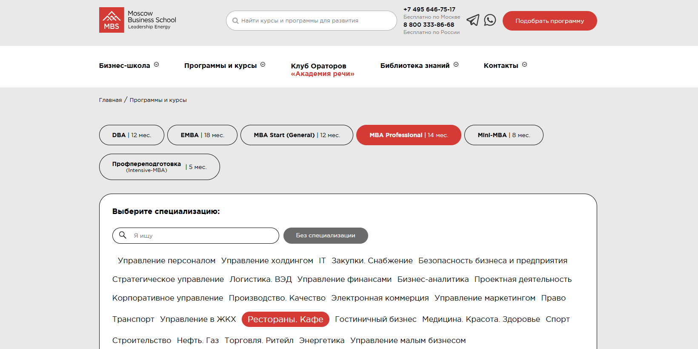- ✅ Официальный сайт: mbschool.ru
- 💸 Цена обучения: 329 000 ₽ (скидка 15% при оплате в течение 3 дней — 279 650 ₽).
- 💳 Рассрочка: до 24 месяцев, ежемесячный платеж от 13 708 ₽.
- 📚 Формат: дистанционный формат обучения, включает видеолекции, вебинары, кейсы, тесты, практические задания и коучинг-сессии с преподавателями.
- ⏳ Продолжительность: 14 месяцев.
- 📜 Документ: выдается диплом Master of Business Administration (MBA) и общеевропейское приложение Diploma Supplement.
- 📝 Трудоустройство: выпускники курсов повышают квалификацию, получают возможность карьерного роста и применения полученных навыков в управлении ресторанным бизнесом.
- 🔷 Для кого подходит курс: для управляющих рестораном, владельцев ресторанов и кафе, менеджеров ресторанного сервиса, руководителей отделов и предпринимателей, желающих освоить ресторанную сферу и развить профессиональные навыки.
Особенности:
Программа направлена на развитие управленческих компетенций и стратегического мышления в сфере ресторанного менеджмента. Обучение проходит в дистанционном формате с возможностью совмещать учебу и работу. Студенты изучают финансовый менеджмент, управление персоналом и ресторанным сервисом, разработку концепции заведения и маркетинг. Особое внимание уделяется практическим кейсам, реальным примерам из ресторанной индустрии и анализу бизнес-процессов. После успешного прохождения обучения слушатели получают диплом международного образца. Доступен бесплатный доступ к дополнительным курсам, материалам и закрытому бизнес-клубу выпускников. Курсы управляющего рестораном помогают сформировать навыки эффективного управления персоналом и качественного сервиса. Обучение проводится с использованием современных дистанционных технологий и образовательных платформ Moscow Business School.
Чему учатся студенты:
- Планированию и организации работы ресторанного бизнеса
- Финансовому и операционному менеджменту
- Управлению персоналом и мотивации сотрудников
- Разработке концепции ресторана и стратегии продвижения
- Контролю затрат, себестоимости и качеству обслуживания
- Применению маркетинговых инструментов в ресторанной сфере
- Развитию ресторанных проектов и повышению уровня сервиса
Преподаватели:
- Орлова Элеонора Владимировна — консультант по вопросам управления и организации ресторанного бизнеса.
- Кулакова Наталья Борисовна — эксперт-практик по открытию ресторанов, управлению операционной деятельностью и оптимизации бизнес-процессов в малых предприятиях.
Преимущества:
- Гибкий дистанционный формат обучения, доступный онлайн в любое время
- Бесплатный доступ ко всем курсам школы и электронным материалам
- Программа соответствует профессиональным стандартам, утверждённым Минтрудом РФ
- Возможность совмещать обучение с работой благодаря удобному графику
- Диплом MBA международного уровня, признанный работодателями
- Участие в бизнес-клубе выпускников и нетворкинг с экспертами индустрии
- Практические занятия и анализ реальных кейсов из ресторанного бизнеса
- Поддержка кураторов и преподавателей на всех этапах обучения
Отзывы учеников:
Выпускники отмечают высокий уровень преподавания, практическую направленность занятий и качественный подход к обучению. Многие подчеркивают, что программа помогает системно взглянуть на ресторанный бизнес, научиться управлять командой и развивать успешные проекты. Особенно ценят возможность дистанционного обучения и гибкий график, позволяющий совмещать учебу с управлением собственными заведениями.
Перейти на официальный сайт курса10. Маркетинг в ресторанном бизнесе PRO — Skillbox
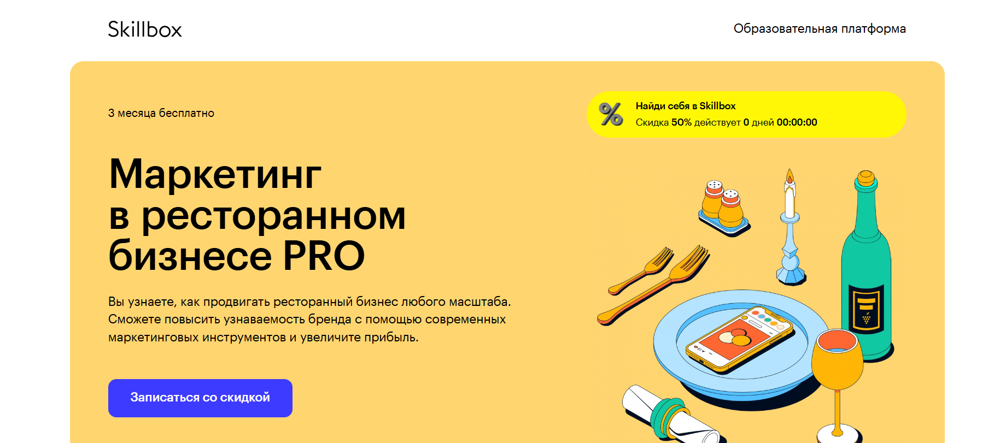- ✅ Официальный сайт: skillbox.ru
- 💸 Цена обучения: от 94 666 ₽ (со скидкой 50%).
- 💳 Рассрочка: от 4 303 ₽/мес на 22 месяца, без переплаты, первый платёж через 3 месяца.
- 📚 Формат: дистанционный формат — видеолекции, практические задания, тесты и обратная связь от кураторов.
- ⏳ Продолжительность: 6 месяцев, 190 видеоуроков.
- 📜 Документ: выдается диплом о профессиональной переподготовке.
- 📝 Трудоустройство: действует программа «Поможем найти работу или вернем деньги».
- 🔷 Для кого подходит курс: для офлайн- и интернет-маркетологов, владельцев и управляющих ресторанов, желающих развивать ресторанный бизнес и увеличивать прибыль.
Особенности:
Курс создан для тех, кто хочет развивать навыки управления ресторанным бизнесом в дистанционном формате. Обучение проводится онлайн, что удобно для совмещения с основной работой. Программа включает современные подходы к менеджменту ресторанного дела, управлению персоналом и продвижению заведений. После успешного прохождения курса выпускники получают диплом, подтверждающий квалификацию по ресторанному менеджменту. Платформа предоставляет доступ к видеоматериалам навсегда, что позволяет повторять материал и совершенствовать профессиональные навыки. Учебный процесс основан на реальных кейсах и практических заданиях, что делает обучение максимально приближённым к условиям ресторанного рынка.
Чему учатся студенты:
- Разрабатывать концепцию ресторана и стратегию продвижения
- Исследовать рынок, конкурентов и целевую аудиторию
- Создавать маркетинговые кампании для заведений общепита
- Управлять репутацией ресторана в онлайн и офлайн-среде
- Проводить фуд-съёмки и оформлять контент для соцсетей
- Анализировать эффективность рекламных инструментов
- Управлять персоналом и контролировать стандарты ресторанного сервиса
Преподаватели:
- Антон Удодов — основатель агентства цифровых коммуникаций KURAGA
- Мария Габуния — директор по маркетингу сети бургерных #FARШ
- Лана Баду — совладелец маркетингового агентства FISH&FISH
- Анастасия Дерябина — руководитель SMM-отдела KURAGA
- Евгения Качалова — ресторатор проектов «Винный Базар», «Французы», Crosta
- Дарья Данилова — основатель и CEO RocketData, эксперт в геомаркетинге
- Юлия Магась — PR-директор платформы EPICSTARS
- Николай Смирнов — директор по развитию Active Traffic
Преимущества:
- Дистанционное обучение доступно из любой точки России
- 3 месяца бесплатного доступа к курсу
- Гибкий график обучения и возможность совмещать учебу с работой
- Практические задания и работа над собственными проектами
- Курс охватывает все ключевые аспекты ресторанного сервиса
- Поддержка кураторов и экспертов из реальной индустрии гостеприимства
- Возможность получения налогового вычета до 13% стоимости курса
Отзывы учеников:
Студенты отмечают понятный формат обучения и высокое качество видеоматериалов. Среди плюсов — профессионализм преподавателей, актуальные знания по ресторанному менеджменту, возможность сразу применять полученные навыки на практике и удобство дистанционного формата. Выпускники подчеркивают, что обучение помогает развивать карьеру и уверенно управлять ресторанами любого уровня.
Перейти на официальный сайт курса11. Ресторанный бизнес: управление предприятием питания — АНО ДПО «НАДПО»
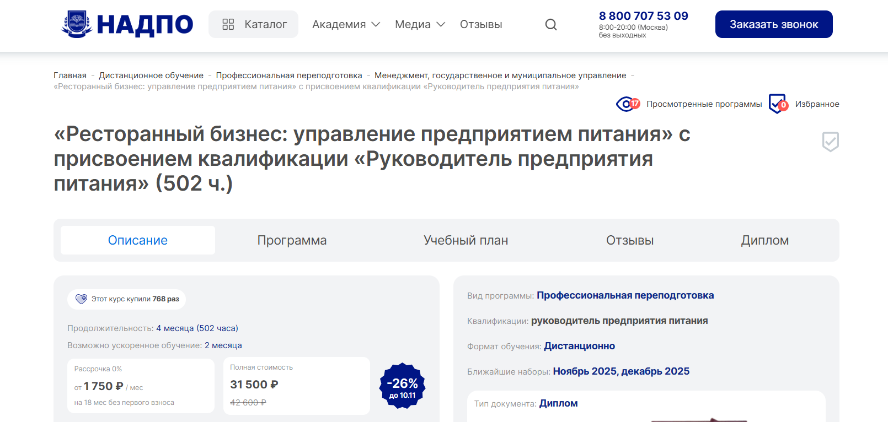
- ✅ Официальный сайт: nadpo.ru
- 💸 Цена: 31 500 ₽ (скидка 26%, при полной оплате на сайте — 28 350 ₽)
- 💳 Рассрочка: 0% на 18 месяцев от 1 750 ₽ в месяц, без первого взноса
- 📚 Формат: дистанционный формат обучения, видеолекции, практические задания, тесты, консультации с преподавателями, бесплатный доступ к библиотекам ЛитРес и Библиоклуб
- ⏳ Продолжительность: 4 месяца (502 часа), возможно ускоренное обучение — 2 месяца
- 📜 Документ: по окончании обучения выдается диплом о профессиональной переподготовке с квалификацией «Руководитель предприятия питания»
- 📝 Трудоустройство: выпускникам помогают найти работу, предоставляют карьерные консультации и предложения от партнеров
- 🔷 Для кого подходит курс: для управляющих рестораном, менеджеров ресторанного бизнеса, владельцев заведений общепита и тех, кто хочет открыть собственный ресторан
Особенности:
Курс ориентирован на развитие профессиональных навыков управления ресторанным бизнесом и ресторанным сервисом. Обучение проводится в дистанционном формате, что позволяет совмещать обучение с работой. Программа соответствует федеральным образовательным стандартам и подходит для тех, кто хочет овладеть современными инструментами ресторанного менеджмента. Более 30% учебного времени уделено практическим занятиям, которые развивают умения управлять персоналом, формировать концепцию ресторана и контролировать уровень обслуживания. После успешного прохождения курсов выпускники получают диплом государственного образца. Такой формат обучения доступен онлайн и дает возможность быстро освоить профессию управляющего рестораном.
Чему учатся студенты:
- Управлять персоналом и формировать команду
- Разрабатывать концепцию ресторана и меню
- Проводить закупки, контролировать финансовый менеджмент и учет
- Управлять заведениями общественного питания и оптимизировать процессы
- Формировать стандарты ресторанного сервиса и качества обслуживания
- Работать с клиентами и улучшать имидж заведения
Преподаватели:
- Козлова Мария Сергеевна — эксперт по ресторанному менеджменту, консультант по открытию предприятий питания
- Александров Илья Николаевич — практикующий управляющий рестораном, специалист по операционному менеджменту
- Дмитриева Ольга Владимировна — преподаватель курсов повышения квалификации, эксперт по финансовому управлению в сфере ресторанного бизнеса
Преимущества:
- Дистанционное обучение с возможностью учиться из любого города
- Соответствие программы ФГОС и профессиональным стандартам
- Более 30% практических занятий и реальных кейсов
- Поддержка преподавателей и карьерных наставников
- Гибкий график обучения и рассрочка 0%
- Доступ к дополнительным материалам и образовательным платформам
- Выдается диплом о профессиональной переподготовке
- Возможность быстро получить профессию управляющего рестораном
Отзывы учеников:
Выпускники отмечают удобный дистанционный формат обучения, практическую направленность и поддержку преподавателей. Многие пишут, что курс помог повысить квалификацию и получить должность управляющего рестораном или открыть собственное заведение. Среди плюсов также выделяют современную программу, доступную подачу материала и гибкий график прохождения обучения.
Перейти на официальный сайт курса12. Менеджмент ресторанного бизнеса — Институт профессионального образования (ИПО)
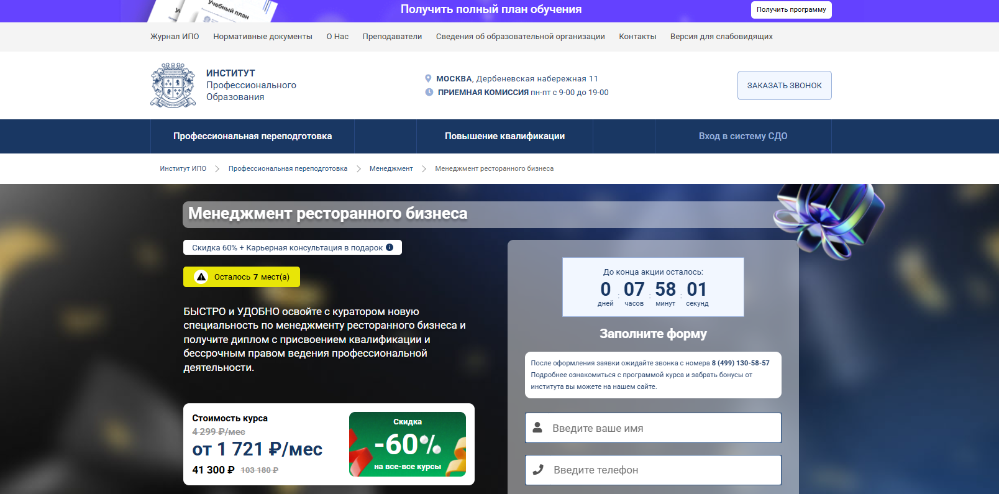- ✅ Официальный сайт: ipo.msk.ru
- 💸 Цена: от 41 300 ₽ (со скидкой 60%, полная стоимость — 103 180 ₽).
- 💳 Рассрочка: от 1 721 ₽/мес на 12, 24 или 36 месяцев без переплаты.
- 📚 Формат: дистанционный формат, видеолекции, домашние задания, тесты, практические занятия, вебинары и поддержка куратора.
- ⏳ Продолжительность: до 6 месяцев (492 академических часа).
- 📜 Документ: по окончании обучения выдается диплом о профессиональной переподготовке с квалификацией «Менеджер предприятия питания».
- 📝 Трудоустройство: Центр развития карьеры помогает выпускникам курсов найти работу в заведениях общественного питания.
- 🔷 Для кого подходит курс: для специалистов со средним профессиональным или высшим образованием, планирующих стать управляющим рестораном или владельцем бизнеса в ресторанной сфере.
Особенности:
Курс создан для тех, кто хочет освоить ресторанному менеджменту и получить востребованную профессию управляющего рестораном. Дистанционное обучение позволяет совмещать учебу и работу. Программа охватывает ключевые аспекты ресторанного сервиса, финансовый менеджмент и управление персоналом. Все занятия проводятся с применением дистанционных образовательных технологий и доступны онлайн. После успешного прохождения обучения выпускники получают диплом установленного образца, что подтверждает их профессиональные навыки. Гибкий график и удобный формат обучения делают процесс максимально комфортным. Курсы ресторанного менеджмента включают практические задания и кейсы из реальной работы ресторанов. Программа соответствует профессиональным стандартам и помогает получить новую квалификацию.
Чему учатся студенты:
- Разрабатывать концепцию ресторана и стандарты ресторанного сервиса
- Управлять персоналом и процессами предприятия питания
- Контролировать финансовое планирование и операционный менеджмент
- Применять маркетинговые инструменты для продвижения ресторана
- Понимать правовые основы и стандарты ресторанного бизнеса
- Организовывать эффективное взаимодействие с клиентами
Преподаватели:
- Ульянкин Олег Валерьевич — кандидат экономических наук
- Смагина Виктория Игоревна — кандидат экономических наук
- Ветрова Екатерина Александровна — кандидат экономических наук
- Морозов Сергей Александрович — практик, директор компании
- Моторин Дмитрий Викторович — бизнес-тренер
- Борисов Александр Николаевич — бизнес-консультант
- Кузнецова Татьяна Викторовна — бизнес-тренер
- Михновец Дарья Александровна — психолог, бизнес-тренер
- Шакаров Михаил Русланович — бизнес-тренер
- Назаров Алексей Игоревич — эксперт по управлению продажами
- Третьякова Оксана Владимировна — эксперт по HR-бренду, основатель агентства «Образование в России»
Преимущества:
- Дистанционное обучение доступно онлайн с любого устройства
- Гибкий график обучения и индивидуальный подход к слушателям
- Официальный диплом установленного образца
- Преподаватели — практикующие специалисты ресторанной индустрии
- Поддержка Центра развития карьеры и помощь в трудоустройстве
- Возможность совмещать обучение с работой
- Актуальные программы, основанные на современных стандартах сервиса
- Практические занятия и реальные кейсы из ресторанной сферы
Отзывы учеников:
Выпускники отмечают удобный дистанционный формат обучения и профессиональный подход преподавателей. Многие говорят, что курс помог научиться управлять рестораном и персоналом, освоить финансовое планирование и разработку концепции заведения. Студенты подчеркивают, что после окончания обучения получили диплом и смогли начать карьеру управляющих рестораном или открыть собственные заведения общественного питания.
Перейти на официальный сайт курса13. Управляющий рестораном (менеджмент в ресторанном бизнесе) – Учебный центр АПОК
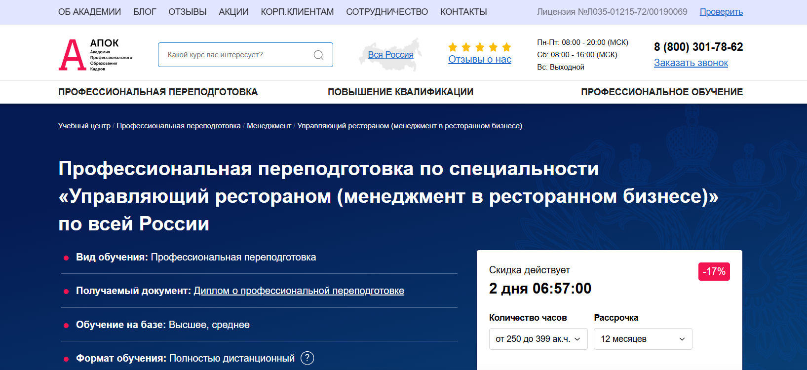- ✅ Официальный сайт: apokdpo.ru
- 💸 Цена обучения: от 29 980 ₽ до 53 980 ₽ (со скидкой 17%).
- 💳 Рассрочка: беспроцентная на 12 месяцев, от 2 498 ₽ в месяц.
- 📚 Формат: дистанционный формат, лекции, тестирование, учебно-методические пособия, онлайн-чат и персональный аккаунт.
- ⏳ Продолжительность: от 250 часов (примерно от 1 месяца).
- 📜 Документ: выдается диплом о профессиональной переподготовке, регистрация в ФИС ФРДО в течение 1–30 дней.
- 📝 Трудоустройство: выпускники курсов получают повышение на работе и востребованы в сфере ресторанного сервиса.
- 🔷 Для кого подходит курс: для управляющих рестораном, администраторов заведений, владельцев бизнеса и тех, кто планирует карьеру в ресторанной индустрии.
Особенности:
Программа профессиональной переподготовки разработана для тех, кто стремится освоить ресторанный менеджмент и получить новые профессиональные навыки. Обучение проводится в дистанционном формате, что удобно для слушателей из любых регионов России. Курсы управляющего рестораном позволяют изучить финансовый менеджмент, управление персоналом и форматы заведений общественного питания. После прохождения обучения выдается официальный диплом государственного образца. Обучение проходит с применением дистанционных технологий, что дает возможность совмещать учебу с работой. По завершении курса выпускники получают знания, необходимые для эффективного управления ресторанным бизнесом.
Чему учатся студенты:
- Управлять персоналом и организовывать процессы обслуживания гостей
- Разрабатывать концепцию ресторана и стандарты сервиса
- Планировать финансы и контролировать расходы
- Создавать меню и управлять закупками
- Использовать современные маркетинговые инструменты для продвижения заведения
- Работать с клиентами и повышать уровень лояльности
Преподаватели:
- Опытные эксперты ресторанной индустрии, практикующие управляющие заведениями общественного питания
- Преподаватели с опытом работы в сфере гостеприимства и ресторанного сервиса
Преимущества:
- Дистанционное обучение доступно онлайн из любого города России
- Официальный диплом установленного образца, действующий по всей РФ
- Бесплатная доставка документов «Почтой России»
- Гибкий график обучения с возможностью совмещать учебу и работу
- Беспроцентная рассрочка на 12 месяцев
- Возможность ускоренного прохождения программы
- Регистрация диплома в государственном реестре ФИС ФРДО
Отзывы учеников:
Студенты отмечают удобный дистанционный формат и понятный материал. Многие выпускники подчеркивают, что программа помогла освоить управление рестораном и повысить квалификацию. Среди плюсов часто выделяют профессионализм преподавателей, практическую направленность и возможность быстро получить официальный диплом.
Перейти на официальный сайт курса14. Управляющий рестораном (менеджмент в ресторанном бизнесе) — Учебный центр дополнительного профессионального образования «ЭКОДПО»
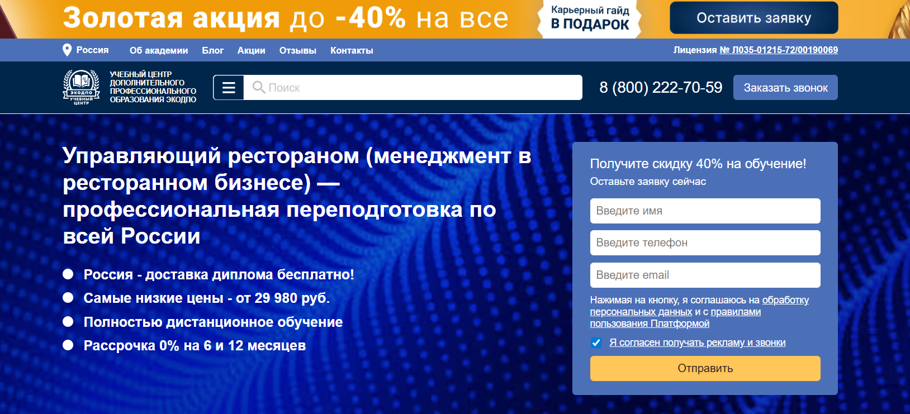- ✅ Официальный сайт: ecodpo.ru
- 💸 Цена обучения: от 29 980 ₽ (со скидкой 40%).
- 💳 Рассрочка: 0% на 6 или 12 месяцев от 2 498 ₽/мес, первый платеж через месяц.
- 📚 Формат: дистанционный формат — видеолекции, тесты, практические задания и итоговое тестирование с неограниченными пересдачами.
- ⏳ Продолжительность: от 250 часов (примерно 1,5 месяца).
- 📜 Документ: диплом о профессиональной переподготовке, занесенный в ФИС ФРДО, с бесплатной доставкой по России.
- 📝 Трудоустройство: выпускники курса успешно работают управляющими и директорами ресторанов, кафе и заведений общественного питания.
- 🔷 Для кого подходит курс: для администраторов, менеджеров ресторанов, владельцев бизнеса и всех, кто хочет управлять заведениями общественного питания и ресторанного сервиса.
Особенности:
Программа обучает ресторанному менеджменту в дистанционном формате, что позволяет совмещать обучение с работой. Студенты осваивают управление рестораном, подбор персонала, основы финансового менеджмента и концепцию заведения. Обучение проводится по федеральному закону №273-ФЗ «Об образовании в РФ». После прохождения курса выпускники получают официальный диплом, который принимается работодателями по всей стране. Доступ к материалам открыт круглосуточно, обучение проходит без вступительных экзаменов. Поддержка кураторов помогает успешно пройти курс и получить необходимые профессиональные навыки. Гибкий график позволяет учиться в удобное время, а система дистанционного образования делает процесс доступным и понятным каждому слушателю.
Чему учатся студенты:
- Основам операционного и финансового менеджмента в ресторанном бизнесе
- Управлению персоналом и повышению уровня сервиса
- Разработке и внедрению концепции ресторана
- Организации работы заведений общественного питания
- Планированию бюджета и контролю расходов
- Маркетинговым стратегиям и продвижению ресторанного бренда
Преподаватели:
- Методисты ЭКОДПО — эксперты ресторанной индустрии с практическим опытом управления предприятиями общепита и гостиничного бизнеса.
Преимущества:
- Полностью дистанционный формат обучения с доступом 24/7
- Официальный диплом установленного образца, внесённый в ФИС ФРДО
- Бесплатная доставка диплома по всей России
- Рассрочка без переплат до 12 месяцев
- Без вступительных экзаменов, можно начать обучение в день оплаты
- Индивидуальные программы под запрос клиента
- Поддержка кураторов и бесплатная пересдача экзаменов
- Возможность быстро начать карьеру в ресторанной индустрии
Отзывы учеников:
Студенты отмечают доступный дистанционный формат и гибкий график обучения. Многие подчеркивают профессионализм преподавателей и оперативную помощь кураторов. Отмечают, что курс помог развить практические навыки управления рестораном, грамотно выстроить работу персонала и повысить прибыль заведения. Среди плюсов — простое оформление, удобная платформа и быстрая доставка диплома.
Перейти на официальный сайт курса15. Ресторанный бизнес: управление предприятием питания — Национальный Центральный Институт Развития Дополнительного Образования
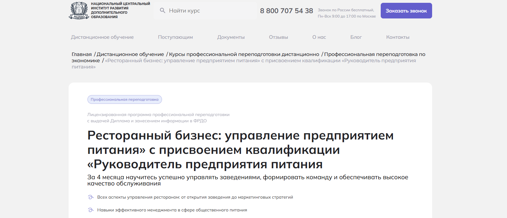- ✅ Официальный сайт: ncrdo.ru
- 💸 Цена обучения: 26 700 ₽ (скидка с 36 000 ₽).
- 💳 Рассрочка: 2 225 ₽ в месяц на 12 месяцев без переплаты.
- 📚 Формат: дистанционное обучение с применением видеолекций, практических заданий, тестов и консультаций преподавателей.
- ⏳ Продолжительность: 4 месяца (502 академических часа).
- 📜 Документ: диплом о профессиональной переподготовке с внесением данных в ФИС ФРДО.
- 📝 Трудоустройство: карьерное сопровождение, консультации HR-специалиста, помощь в подготовке резюме и собеседованиях.
- 🔷 Для кого подходит курс: для сотрудников ресторанов, владельцев бизнеса, предпринимателей и специалистов, желающих подтвердить квалификацию в ресторанном менеджменте.
Особенности:
Обучение проходит в дистанционном формате с гибким графиком, что позволяет совмещать учебу с работой. Программа охватывает ключевые аспекты ресторанного менеджмента — от разработки концепции ресторана и финансового планирования до управления персоналом и маркетинговых стратегий. Студенты осваивают практические навыки на реальных кейсах из ресторанной индустрии, изучают стандарты ресторанного сервиса и методы повышения уровня обслуживания. Курс основан на современных образовательных технологиях и проводится с участием экспертов-практиков. По окончании обучения выдается диплом государственного образца, который подтверждает квалификацию управляющего рестораном. Выпускники курса получают доступ к дополнительным материалам и вебинарам для постоянного повышения квалификации.
Чему учатся студенты:
- Организации открытия и управления заведением общественного питания
- Разработке концепции ресторана и формированию меню
- Управлению персоналом и построению эффективных команд
- Контролю качества ресторанного сервиса
- Финансовому менеджменту и оптимизации расходов
- Созданию имиджа и фирменного стиля заведения
- Разработке маркетинговых стратегий продвижения
Преподаватели:
- Мельникова Елена Васильевна — опыт научно-практической деятельности с 2010 года
- Тышкевич Марина Юрьевна — преподаватель с опытом работы в ресторанной сфере с 2006 года
- Шевченко Дария Игоревна — специалист по ресторанному менеджменту, опыт с 2018 года
Преимущества:
- Дистанционное обучение без отрыва от работы
- Диплом государственного образца, действительный по всей России
- Возможность пройти обучение в ускоренном формате
- Поддержка личного куратора и HR-консультанта
- Практическая направленность программы с реальными кейсами
- Доступ к библиотеке вебинаров и бесплатным материалам
- Высокие оценки выпускников на популярных площадках (Яндекс, Google, 2GIS)
- Возможность карьерного роста и открытия собственного бизнеса
Отзывы учеников:
Выпускники отмечают понятную подачу материала, профессионализм преподавателей и практическую пользу курса. Многие подчеркивают, что обучение помогло развить навыки управления персоналом и открыть собственное заведение. Высокий уровень сервиса и поддержка кураторов делают дистанционное обучение максимально комфортным.
Перейти на официальный сайт курса16. Ресторанный бизнес: управление предприятием питания – Академия ЦАППКК
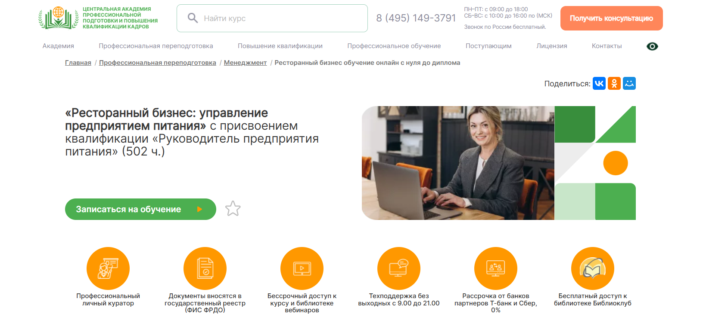
- ✅ Официальный сайт: appkk.ru
- 💸 Цена: 25 200 ₽ (со скидкой 25% от полной стоимости 33 600 ₽)
- 💳 Рассрочка: 0%, от 2 100 ₽ в месяц на 12 месяцев через банки-партнёры Т-банк и Сбер
- 📚 Формат: дистанционный формат обучения с видеолекциями, тестами, практическими заданиями и круглосуточным доступом к материалам
- ⏳ Продолжительность: 4 месяца (502 академических часа)
- 📜 Документ: по окончании обучения выдается диплом о профессиональной переподготовке, внесённый в государственный реестр ФИС ФРДО
- 📝 Трудоустройство: выпускникам помогает HR-наставник — консультации, подбор вакансий, помощь в составлении резюме и карьерном развитии
- 🔷 Для кого подходит курс: курс подходит управляющим рестораном, администраторам, владельцам ресторанов, специалистам ресторанного сервиса и тем, кто хочет получить новую профессию в ресторанной сфере
Особенности:
Курс проходит в дистанционном формате, что позволяет совмещать обучение с работой или другими делами. Программа профессиональной переподготовки охватывает ключевые аспекты ресторанного менеджмента, включая управление персоналом, операционный и финансовый менеджмент, разработку концепции ресторана и стандарты сервиса. Все занятия проводятся с применением дистанционных образовательных технологий. После завершения курса выпускники получают официальный диплом и бессрочный доступ к библиотеке вебинаров. Преподаватели и кураторы сопровождают студентов на всех этапах прохождения программы, помогая овладеть практическими навыками управления ресторанным бизнесом.
Чему учатся студенты:
- Управлению ресторанным бизнесом и персоналом предприятий общественного питания
- Разработке меню и концепции ресторана
- Финансовому менеджменту и планированию расходов
- Организации эффективного ресторанного сервиса
- Подбору персонала и контролю качества обслуживания
- Использованию маркетинговых инструментов для продвижения заведений
- Формированию устойчивой бизнес-модели ресторана
Преподаватели:
- Анастасия Регнер — HR-наставник, бизнес-тренер со стажем более 3 лет, участник международных конференций по HR-менеджменту, специалист по стратегическим коммуникациям
Преимущества:
- Удобный дистанционный формат обучения с гибким графиком
- Диплом государственного образца, внесённый в реестр ФИС ФРДО
- Помощь в трудоустройстве после окончания обучения
- Бессрочный доступ к учебным материалам и вебинарам
- Профессиональные преподаватели-практики ресторанной индустрии
- Рассрочка без процентов и переплат
- Поддержка слушателей техподдержкой без выходных
- Программа соответствует профессиональным стандартам ресторанного менеджмента
Отзывы учеников:
По отзывам выпускников Академии ЦАППКК, курс помогает освоить профессию управляющего рестораном и получить реальные навыки управления персоналом и заведениями общественного питания. Студенты отмечают практическую направленность, качественные материалы, удобный дистанционный формат и поддержку преподавателей. Многие успешно трудоустроились в ресторанной индустрии после прохождения курса.
Перейти на официальный сайт курса17. Управляющий рестораном — Учебный центр «НЦПО»
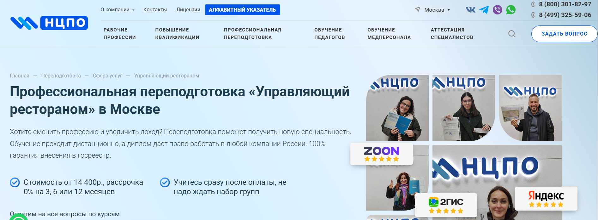- ✅ Официальный сайт: ncpo.ru
- 💸 Цена: от 14 400 ₽ (скидка 2 500 ₽ при оплате в день заказа).
- 💳 Рассрочка: 0% на 3, 6 или 12 месяцев, ежемесячный платеж от 1 200 ₽.
- 📚 Формат: дистанционный формат — видеолекции, тестирование, домашние задания, доступ 24/7 к образовательной платформе.
- ⏳ Продолжительность: от 250 до 1600 академических часов.
- 📜 Документ: по окончании обучения выдается диплом о профессиональной переподготовке с внесением в государственный реестр ФРДО.
- 📝 Трудоустройство: выпускники курсов успешно работают управляющими ресторанов, заведениями общественного питания и владельцами ресторанов.
- 🔷 Для кого подходит курс: для администраторов ресторанов, руководителей предприятий питания, специалистов ресторанного сервиса и тех, кто хочет развиваться в ресторанной сфере.
Особенности:
Программа разработана для профессиональной переподготовки специалистов, желающих освоить ресторанный менеджмент и управлять персоналом заведений общественного питания. Обучение проходит в дистанционном формате, что позволяет совмещать учебу с работой. После успешного прохождения курсов слушателям выдается официальный диплом. Образовательная программа соответствует профессиональным стандартам и дает возможность получить все необходимые профессиональные навыки для эффективного управления ресторанным бизнесом. Курсы включают теоретическую и практическую подготовку, а также обучение финансовому менеджменту, подбору персонала и планированию бюджета ресторана.
Чему учатся студенты:
- Управлять персоналом и контролировать качество ресторанного сервиса;
- Разрабатывать концепцию ресторана и оптимизировать процессы обслуживания гостей;
- Планировать финансовые показатели и повышать прибыль предприятия;
- Организовывать работу с поставщиками и вести внутреннюю отчетность;
- Применять методы эффективного управления ресторанным бизнесом и маркетинговые инструменты для привлечения клиентов.
Преподаватели:
- Терешков Александр Леонидович — генеральный директор учебного центра «НЦПО», эксперт ресторанного дела.
- Грезнева Диана — преподаватель курса, специалист по управлению персоналом и развитию ресторанных проектов.
- Малкова Анна — менеджер ресторанов с практическим опытом более 10 лет в индустрии общественного питания.
Преимущества:
- Дистанционное обучение с возможностью учиться из любой точки страны;
- Доступ к материалам курса сохраняется навсегда;
- Диплом государственного образца с внесением в реестр ФРДО;
- Бесплатная доставка документов по всей России;
- Гибкий график обучения, подходящий для совмещения с работой;
- Полное юридическое сопровождение и прозрачные условия договора;
- Практическая направленность программы на развитие управленческих компетенций;
- Обучение проводится опытными преподавателями-практиками ресторанного дела.
Отзывы учеников:
Выпускники отмечают, что дистанционное обучение удобно совмещать с работой, а материал подан доступно и структурировано. По отзывам студентов, программа помогает освоить практические навыки управления рестораном и развить уверенность в работе с персоналом. Многие подчеркивают высокий уровень преподавателей и оперативную поддержку во время обучения. Средний рейтинг «НЦПО» — 5.0 на Яндекс и 4.9 на Google.
Перейти на официальный сайт курса18. Курсы управляющего рестораном — Международная школа профессии
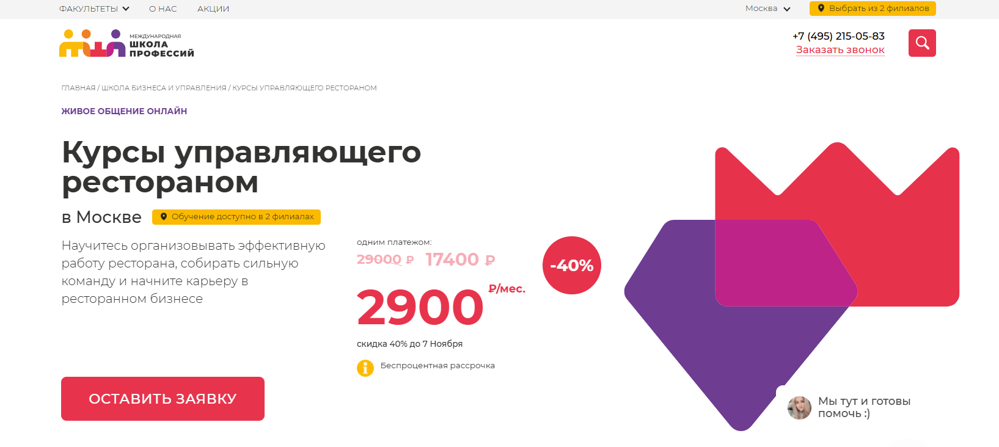- ✅ Официальный сайт: moscow.videoforme.ru
- 💸 Цена: 17 400 ₽ (скидка 40% от 29 000 ₽).
- 💳 Рассрочка: беспроцентная, от 2 900 ₽ в месяц.
- 📚 Формат: дистанционный формат обучения с видеолекциями, домашними заданиями, тестами и обратной связью от преподавателей.
- ⏳ Продолжительность: зависит от выбранного графика обучения и скорости прохождения курсов.
- 📜 Документ: по окончании обучения выдается диплом о профессиональной переподготовке установленного образца.
- 📝 Трудоустройство: выпускники курсов могут работать управляющими рестораном, администраторами или открыть собственное заведение.
- 🔷 Для кого подходит курс: для тех, кто хочет стать управляющим рестораном, владельцем бизнеса, а также для менеджеров ресторанов и администраторов заведений общественного питания.
Особенности:
Курс проводится в дистанционном формате, что позволяет проходить обучение без отрыва от работы. Программа охватывает все ключевые аспекты ресторанного менеджмента — от подбора персонала до управления финансовыми процессами. Студенты изучают принципы ресторанного сервиса, учатся разрабатывать концепцию ресторана, управлять персоналом и анализировать показатели эффективности. По окончании курсов выпускники получают профессиональные навыки для успешного ведения ресторанного бизнеса и открытия собственных заведений. Обучение проводится с применением современных дистанционных технологий и образовательных платформ.
Чему учатся студенты:
- Эффективному управлению ресторанным бизнесом
- Организации работы персонала и контролю качества обслуживания
- Финансовому менеджменту и планированию бюджета ресторана
- Разработке концепции ресторана и меню
- Использованию инструментов маркетинга и продвижения заведений
- Применению стандартов ресторанного сервиса и повышению уровня обслуживания
Преподаватели:
- Киселева Мария Андреевна — эксперт по ресторанному менеджменту, преподаватель бизнес-школы, опыт работы более 10 лет
- Романов Алексей Викторович — практикующий управляющий рестораном, консультант по управлению персоналом и развитию заведений
- Полякова Елена Дмитриевна — специалист по финансовому менеджменту и операционному управлению в ресторанной индустрии
Преимущества:
- Дистанционный формат обучения, доступный онлайн в любое время
- Обучение охватывает ключевые аспекты ресторанного менеджмента
- Диплом выдается после успешного прохождения обучения
- Курс подходит для начинающих и действующих управляющих рестораном
- Развитие практических навыков на реальных кейсах
- Возможность совмещать обучение с работой
- Поддержка кураторов и преподавателей на всех этапах
- Соответствие профессиональным стандартам сферы ресторанного сервиса
Отзывы учеников:
Выпускники курсов отмечают удобный дистанционный формат, гибкий график обучения и практическую направленность программы. Многие подчеркивают, что обучение помогает получить востребованную профессию управляющего рестораном, развить управленческие и финансовые навыки, а также открыть собственный ресторанный бизнес. Отмечается высокий уровень преподавателей и возможность применять знания уже во время прохождения курса.
Перейти на официальный сайт курсаКто такой управляющий рестораном?
Управляющий рестораном — это специалист, который отвечает за эффективную работу заведения, качество обслуживания гостей и прибыльность бизнеса. Он сочетает функции администратора, менеджера, маркетолога и HR-специалиста. Именно от его компетентности зависит репутация ресторана и его финансовый успех.
Что делает управляющий рестораном и чем занимается?
Деятельность управляющего многогранна и требует отличных организационных способностей. Он не просто руководит персоналом, но и контролирует все бизнес-процессы заведения.
- Контроль качества обслуживания — следит за стандартами сервиса и удовлетворённостью гостей.
- Финансовое управление — ведёт отчётность, планирует бюджет, анализирует прибыль и расходы.
- Работа с персоналом — подбор, обучение, мотивация и контроль работы сотрудников.
- Управление поставками — взаимодействие с поставщиками продуктов, напитков и инвентаря.
- Маркетинг и продвижение — разработка акций, участие в создании бренда, продвижение в соцсетях.
- Решение конфликтных ситуаций — умение находить компромиссы с клиентами и сотрудниками.
Что должен знать и уметь управляющий ресторанным бизнесом?
Чтобы успешно выполнять обязанности, управляющему нужно обладать обширными знаниями в разных областях.
- Основы ресторанного бизнеса, стандарты HACCP и санитарные нормы.
- Навыки управления персоналом и эффективной коммуникации.
- Финансовая грамотность и аналитическое мышление.
- Знание программ автоматизации ресторанов (iiko, R-Keeper, Poster POS).
- Понимание маркетинга, SMM и клиентского сервиса.
- Лидерские качества, стрессоустойчивость, организованность.
Востребованность и зарплаты управляющих рестораном в России
Профессия управляющего остаётся одной из самых востребованных в ресторанной индустрии. В 2025 году спрос на квалифицированных специалистов только растёт, особенно в крупных городах России — Москве, Санкт-Петербурге, Казани, Екатеринбурге и Краснодаре.
Заработная плата зависит от опыта, формата заведения и региона.
- Начинающий управляющий — от 80 000 до 120 000 рублей в месяц.
- Опытный менеджер среднего уровня — от 150 000 до 250 000 рублей.
- Топ-управляющий в премиум-сегменте — от 300 000 рублей и выше, включая бонусы за прибыль.
Часто в зарплату входят премии за выполнение планов, процент от оборота и корпоративные бонусы.
Как стать управляющим рестораном и где учиться?
Чтобы построить карьеру в ресторанном менеджменте, важно сочетать образование и практический опыт.
- Получить профильное образование по направлениям: «Гостиничное дело», «Менеджмент в сфере сервиса», «Ресторанный бизнес».
- Пройти стажировку или начать карьеру с должностей администратора, официанта или менеджера зала.
- Посещать курсы повышения квалификации и тренинги по ресторанному менеджменту.
- Развивать навыки управления, аналитики и работы с клиентами.
Обучение предлагают ведущие российские вузы: РАНХиГС, РГУТиС, Российский экономический университет им. Плеханова, а также специализированные школы ресторанного бизнеса, такие как Novikov School и Moscow Food Academy.
Перспективы профессии
В 2025 году ресторанная отрасль России активно развивается — открываются новые форматы кафе, баров и фуд-холлов. Управляющий рестораном становится ключевой фигурой, способной не только обеспечивать стабильную работу, но и внедрять инновации. В будущем востребованы будут специалисты, разбирающиеся в цифровых технологиях, онлайн-продвижении и автоматизации процессов.
Плюсы и минусы профессии
- Преимущества: высокий доход, карьерный рост, востребованность, возможность творческой самореализации.
- Недостатки: высокая ответственность, стресс, ненормированный график, необходимость постоянно быть «в курсе» всех процессов.
Что включает в себя обучение ресторанному бизнесу?
Обучение ресторанному бизнесу охватывает менеджмент ресторана, управление персоналом, организацию кухни, стандарты сервиса, основы фуд-коста, маркетинг и финансовое планирование. Программа помогает понять специфику работы общепита, включая контроль качества, логистику поставок и построение эффективной операционной модели.
Почему обучение ресторанному делу важно для начинающих предпринимателей?
Обучение ресторанному делу помогает избежать типичных ошибок в организации работы ресторана. Новички получают знания о поиске поставщиков, разработке меню, управлении затратами, санитарных нормах и работе с персоналом, что снижает риски и повышает прибыльность бизнеса.
Какие навыки дает обучение управлению рестораном?
Обучение управлению рестораном развивает навыки стратегического планирования, управления персоналом, разработки меню, контроля качества, оптимизации процессов кухни, грамотного распределения бюджета и эффективного маркетинга. Также изучаются современные цифровые решения для автоматизации ресторанов.
Можно ли пройти обучение на ресторатора с нуля?
Да, многие программы рассчитаны на обучение с нуля. Они дают базовые знания по организации кухни, созданию концепции заведения, выбору локации, составлению бизнес-плана, работе с клиентским сервисом и построению операционной системы управления рестораном.
Сколько длится обучение ресторанному делу?
Длительность зависит от формата: интенсивы занимают 1–2 недели, полноценные курсы — от 1 до 6 месяцев. Обучение менеджменту ресторана в продвинутых программах может длиться до года, включая стажировки в действующих заведениях.
Какие форматы существуют для обучения ресторанному бизнесу?
Есть онлайн-курсы, офлайн-тренинги, профессиональные мастер-классы, стажировки в ресторанах, программы повышения квалификации и индивидуальный коучинг по управлению рестораном. Выбор зависит от целей и уровня подготовки ученика.
Подходит ли обучение ресторанному бизнесу действующим ресторатором?
Да. Опытные рестораторы проходят обучение для повышения эффективности, оптимизации расходов, улучшения организации работы ресторана и внедрения современных технологий автоматизации. Это помогает увеличить доход и улучшить стабильность бизнеса.
Чему учат на курсах по менеджменту ресторана?
Курсы по менеджменту ресторана включают изучение KPI, работу с персоналом, управление закупками, контроль пищевых процессов, маркетинг и управление репутацией. Отдельно рассматриваются стандарты сервиса и повышение лояльности гостей.
Как обучение ресторанному делу помогает улучшить работу кухни?
Обучение затрагивает организацию кухни, стандартизацию технологических карт, процессы приготовления, хранение продуктов, санитарные правила и грамотное распределение обязанностей между поварами. Это снижает потери, ускоряет работу и повышает стабильность качества блюд.
Помогает ли обучение ресторанному бизнесу улучшить сервис?
Да. Программы обучения уделяют внимание стандартам обслуживания, работе официантов, коммуникации с клиентами, созданию гостеприимной атмосферы и формированию бренда. Это повышает рейтинг заведения и стимулирует возврат гостей.
Можно ли пройти обучение ресторанному делу онлайн?
Да, существует множество онлайн-курсов. Они включают видеоуроки, вебинары, практические задания и консультации экспертов. Онлайн-формат позволяет изучать менеджмент ресторана в удобное время и получать практические инструменты для внедрения.
Какие темы по маркетингу изучаются на обучении ресторанному бизнесу?
Использование социальных сетей, создание бренда, работа с отзывами, управление репутацией, продвижение меню, акции, программа лояльности, сезонные предложения. Маркетинг помогает повышать узнаваемость и привлекать новых гостей.
Готовят ли курсы по ресторанному делу к открытию собственного заведения?
Да, большинство программ включают полный цикл подготовки: разработка концепции, создание бизнес-плана, расчет бюджета, подбор сотрудников, организация работы ресторана, управление кухней и маркетинг. Обучение помогает подготовиться к запуску с минимальными рисками.
Преподают ли на курсах по ресторанному бизнесу действующие эксперты отрасли?
Часто обучение ведут практикующие рестораторы, шеф-повара, операционные директора и специалисты по менеджменту ресторана. Это дает ученикам реальные кейсы, современные решения и проверенные методики управления.
Как обучение ресторанному делу помогает снизить расходы?
Обучение учит анализировать фуд-кост, оптимизировать закупки, упорядочивать организацию кухни, минимизировать потери, правильно планировать смены и внедрять автоматизацию. Это повышает прибыль ресторана без ущерба для качества.
Чему учат на обучении управлению рестораном в части финансов?
Рассматриваются вопросы формирования бюджета, прогнозирования доходов, учета затрат, анализа рентабельности, определения ключевых финансовых показателей и оптимизации операционных расходов.
Можно ли после обучения ресторанному бизнесу устроиться на работу?
Да, выпускники могут работать менеджерами, управляющими, администраторами, су-шефами, маркетологами или координаторами мероприятий. Наличие профессионального обучения повышает конкурентоспособность кандидата.
Нужно ли обучение ресторанному делу, если уже есть опыт работы в общепите?
Да, оно помогает систематизировать знания, освоить современные технологии организации работы ресторана, улучшить навыки управления персоналом и оптимизировать процессы кухни и сервиса для повышения эффективности бизнеса.
------------------------------------------------
Реклама. Информация о рекламодателе по ссылкам в статье.